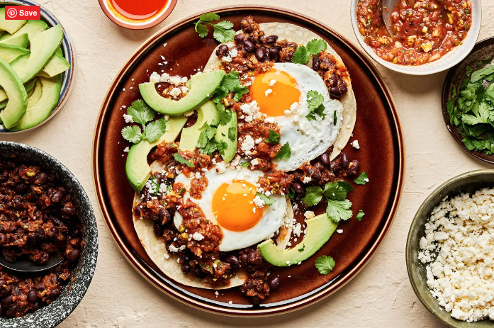

Huevos Rancheros
Runny, fried eggs over a bed of seasoned beans, atop a layer of warm corn tortillas, add a few condiments and voilà! Homemade huevos rancheros!
This Mexican breakfast recipe is just about as easy as it is delicious. As with our Breakfast Tacos, if you can open a can of beans and fry up an egg, you can make this simple recipe. You can use store-bought salsa to make life easy, or go the extra mile and whip up some Homemade Salsa. You can also make Black Beans from scratch!
Ingredients
- Black beans
- Salsa. Use your favorite store-bought salsa, or make it yourself! Try our favorite Homemade Salsa.
- Corn tortillas
- Perfectly fried eggs
- Cotija cheese—this salty, crumbly cow’s milk cheese is make-or-break for these huevos, so don’t skip it!
- Cilantro
- Avocado
- Hot sauce
Instructions
- Fry up some eggs in a medium skillet. We like them sunny side up, but over easy is fine too—whatever you prefer!
- Simmer the black beans in the salsa.
- Warm the tortillas in a separate skillet or comal.
- Assemble! Tortilla, beans, egg.
- Garnish as you please! We love to go all out and top them with more salsa, avocado, cotija cheese, cilantro and hot sauce.
How to Store Leftovers + Tips
Leftovers of the beans and salsa can be stored for 3-4 days or frozen for 3 months. Likewise, tortillas can be frozen (almost indefinitely!) for future use. When you’re ready to reheat, freshly fry as many eggs as you require and top to your heart’s desire.
Don’t skimp on the toppings. This Mexican huevos rancheros recipe is all about loading up on cheese and avocado and lots of hot sauce.
If you like a fried egg with crispy edges, heat olive oil in a skillet on high heat (you don’t want it to smoke) and crack your eggs. Once the edges have crisped up, reduce the heat and cook the yolks to your preference.